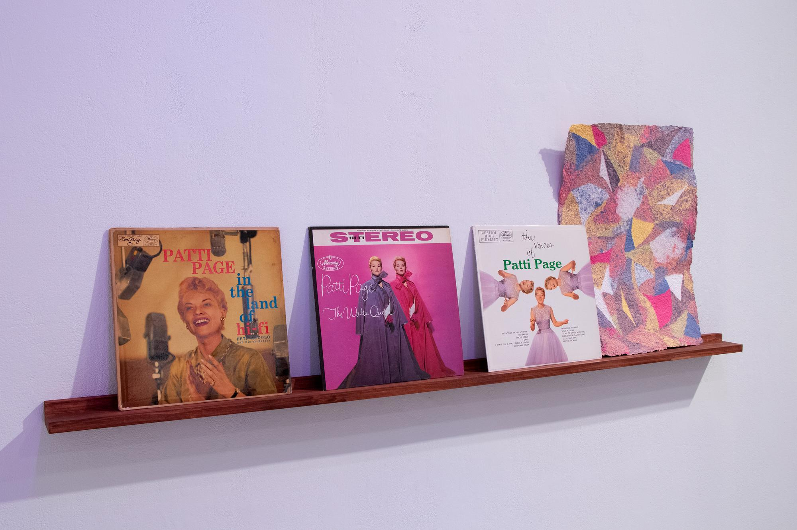
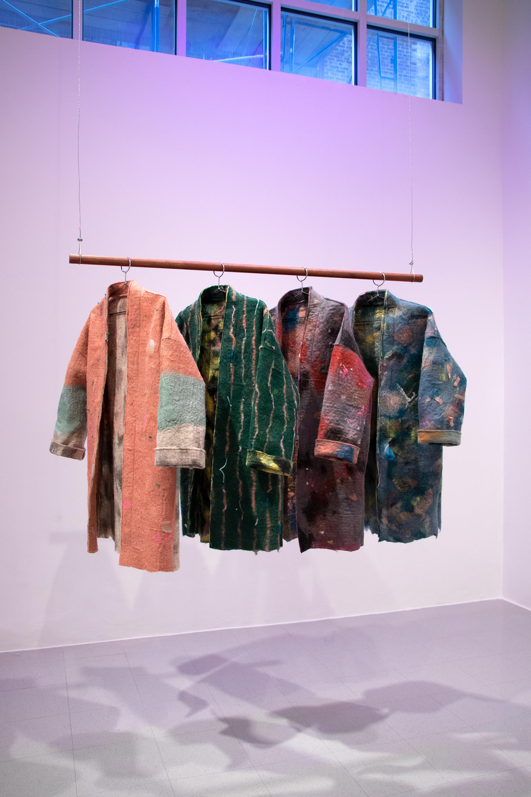
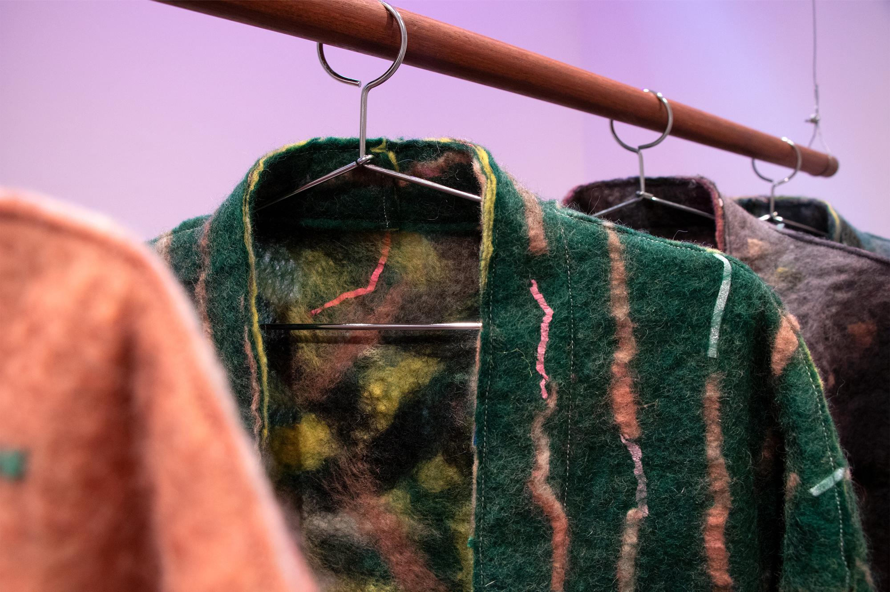
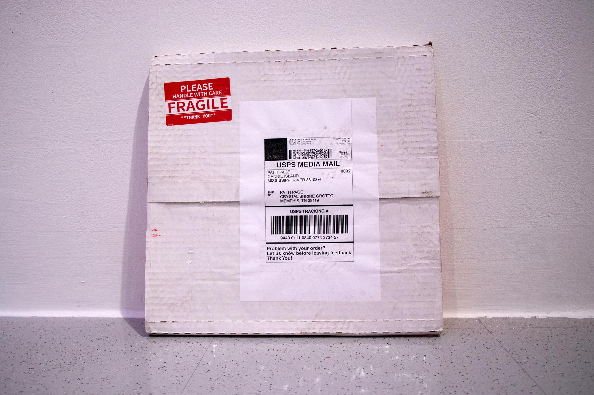
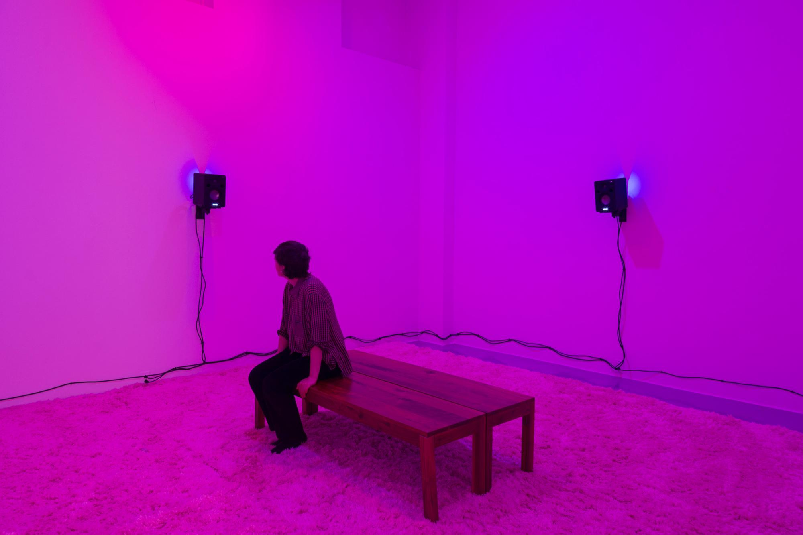
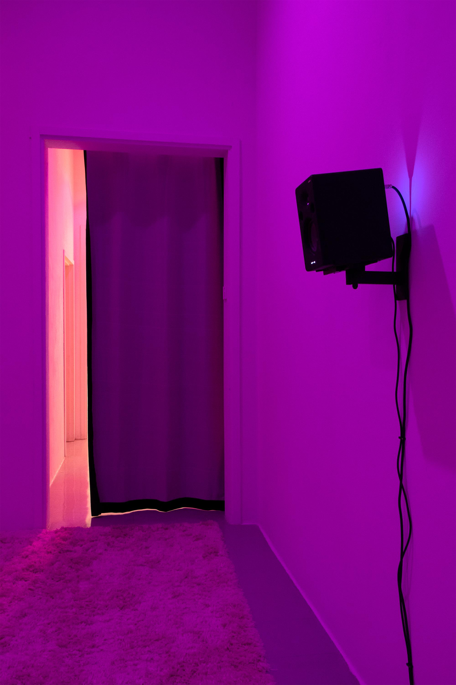

The Patti Page Quartet
2021
4-channel audio recording, felt, wood, paper, found records, shipping box, plastic, shipping materials, email, carpet
30 minutes
The installation centers around a radio play-like audio piece which tells a fictional story—through dialogue,
pop songs, sound effects, soundscapes, and found audio—of pop singer Patti Page encountering other Patti Pages as
she travels around the Midwest. In 1948, Patti Page became the first person to layer their own vocals on a record
with the release of her romantic duet “Confess.”